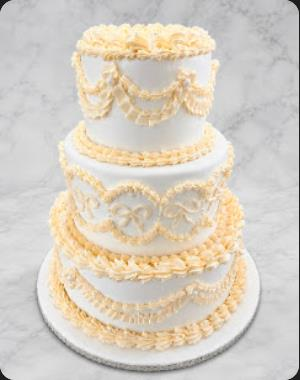
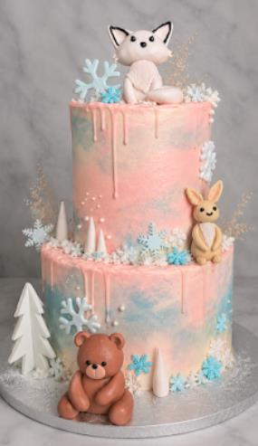
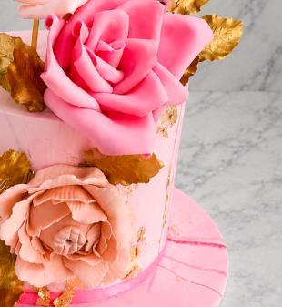
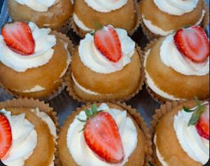
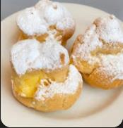

THE CENTREPIECE
Statement cakes
Layers, piping and a little occasion-ready drama.
A patisserie at Northgate
A cake that takes centre stage. A sweet treat for the ride home. Find your next little moment at Tony’s Cake Boss Patisserie.
Entrance 5, Northgate Shopping Centre

A few reasons to stop by
From celebration cakes to pastries for the everyday, here’s a little taste of the patisserie’s world.

THE CENTREPIECE
Layers, piping and a little occasion-ready drama.

THE SWEET PAUSE
A little treat, enjoyed now or saved for later.

THE LITTLE INDULGENCE
Take a moment, pick a favourite, make the day sweeter.
For a particular cake or treat, call ahead to ask what’s available.
A little drama belongs on the dessert table
Looking for a cake for a birthday, wedding or just-because moment? Get in touch with the patisserie to ask about designs and availability.
Message the patisserieFind your way to something sweet
Find Tony’s Cake Boss Patisserie at Entrance 5, opposite Woolworths at Northgate Shopping Centre.
TONY’S CAKE BOSS PATISSERIE
Entrance 5, opposite Woolworths
21 Northumberland Avenue
Randburg, 2188
Call to confirm current hours and availability.